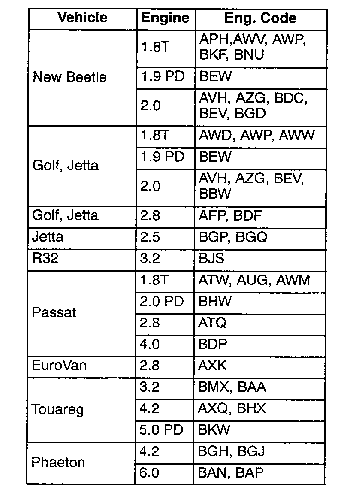
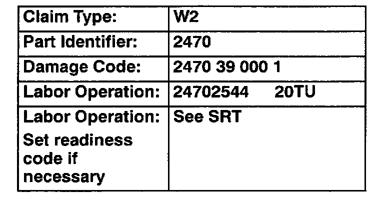

Engine Controls - MIL ON/DTC P1603 (18011) Stored
Group: 01Number: 05-02
Date: Jan. 14, 2005
Subject:
Diagnostic Trouble Code (DTC) P1603 (18011) Stored in
DTC Memory
Model(s):
All with Electronic Power 1999 --> 2005 Control (see table)
Condition

DTC P1603 (18011) "Control unit faulty" stored in DTC memory.
Service
DO NOT automatically replace ECM for this condition.
First perform the following:
- Verify that battery voltage and condition are OK. (Charge and load test as necessary).
If battery voltage is low:
- Correct reason for low battery voltage.
Tip:
Battery voltage must be substantiated by a Midtronics M0R340V printout. Printout must be attached to the repair order. If ECM is requested by the Warranty Test Center, a copy of the Midtronics Tester printout must be sent with the ECM along with all other supporting documentation.
- With battery fully charged:
- Connect the VAS 5051/5052 Diagnostic tool.
- Switch ignition ON.
- Select "Vehicle Self Diagnosis".
- Interrogate and erase DTC memory.
- Perform throttle adaptation (see appropriate Repair Manual and Repair Group 23 or 24).
- Start engine and allow to run briefly, then switch engine OFF.
- Repeat above step (Start/Shut OFF) 5 times.
- Check DTC memory again.
If MIL does not illuminate and DTC has not returned:
^ A low battery condition most likely caused the DTC to be stored.
- Set readiness code.
If MIL illuminates or DTC has been stored again, perform the following:
- Replace ECM (see appropriate Repair Manual and Repair Group 23 or 24).
- Set readiness code.

When procedure applies to vehicles within the New Vehicle Limited Warranty, use the table.